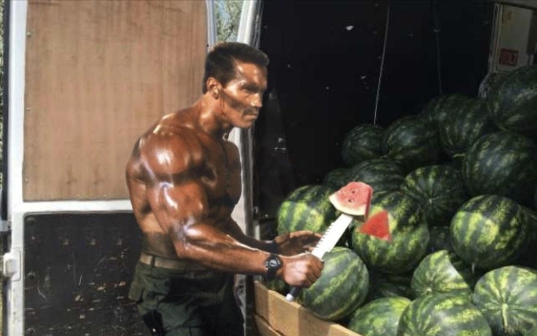

Pepenele Rotund, turtit, ca globul pământesc. Mijlocul verii, mijlocul anului, și centrul pepenelui. Dur și tare, la exterior. Hidratare, culori complementare. Nu mi s-a plâns ca nu știe unde să găsească pepeni. Nu e mereu vorba despre a rezolva probleme, Și nici despre a crea altele.